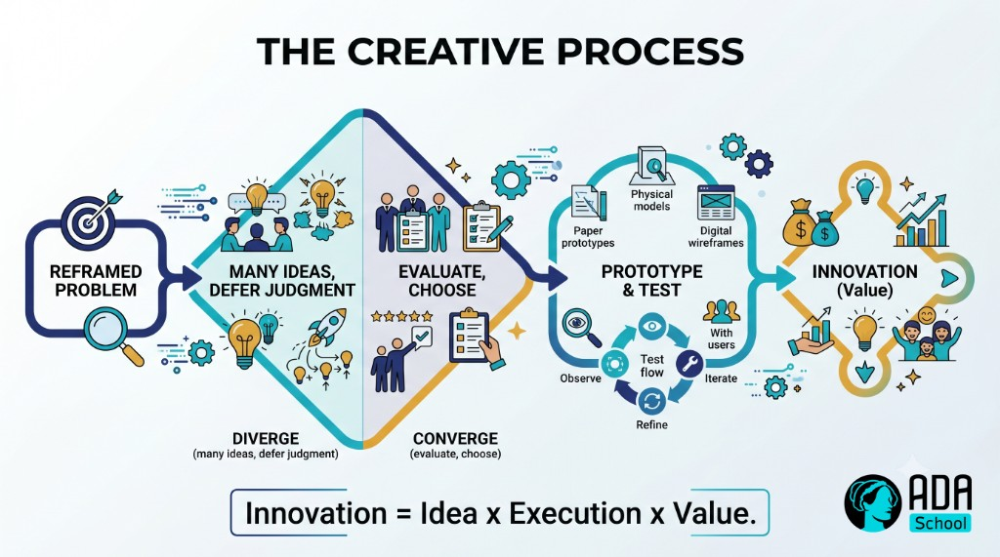
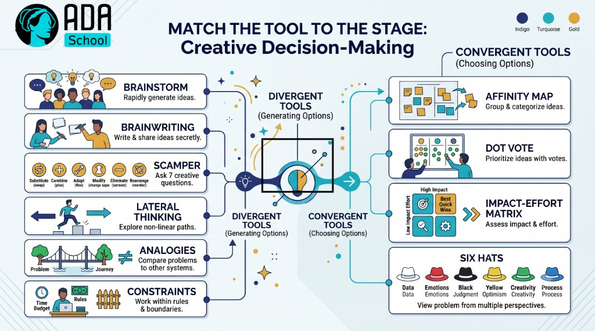
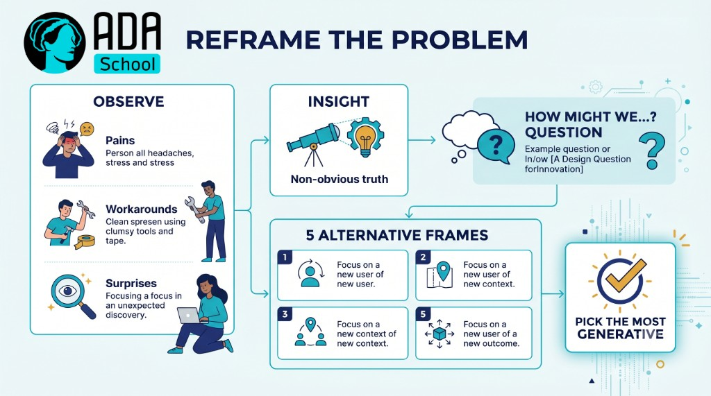
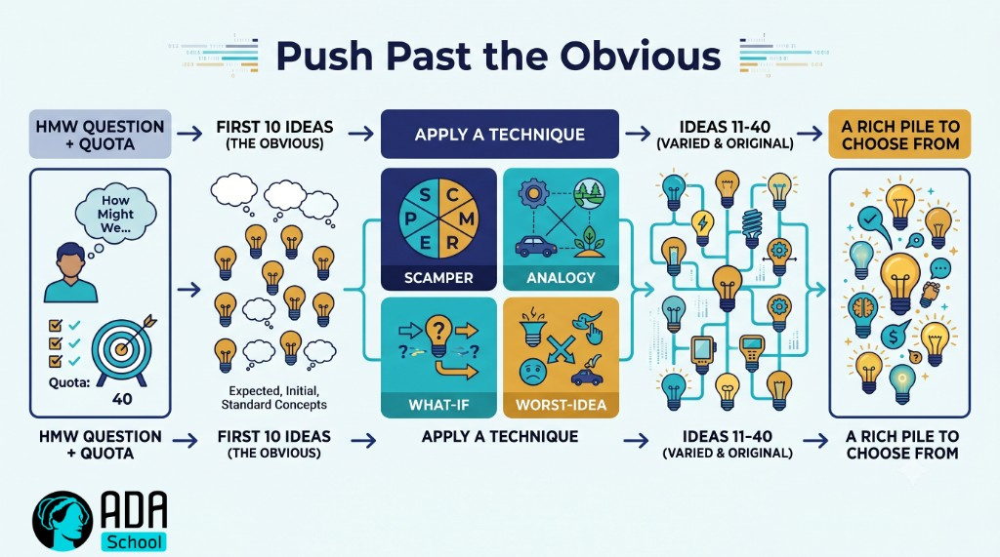
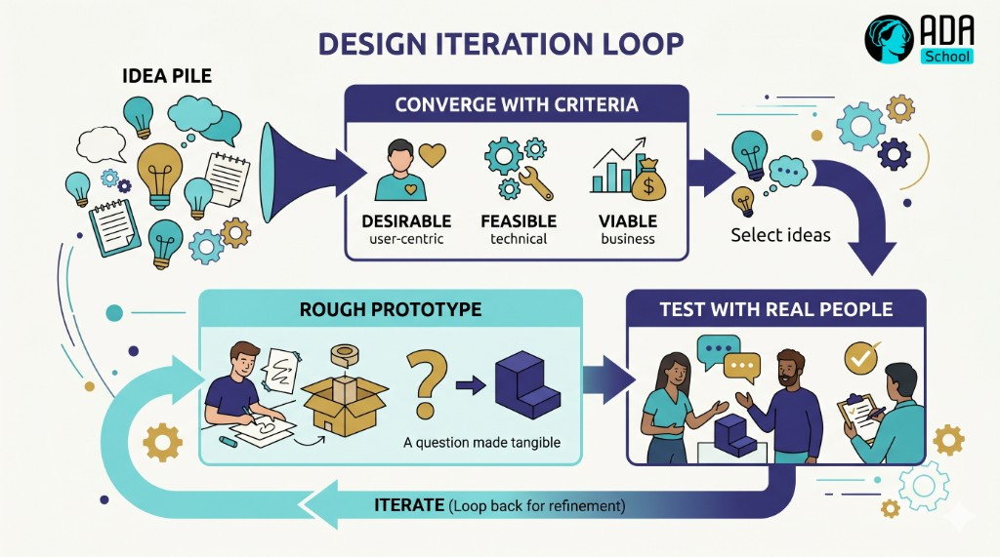

💡 Worked Example — Innovation & Creativity Micro-Credential (full course)
A complete, ready-to-run ADA micro-credential for the skill every organization says it wants and few teach systematically: turning fresh ideas into real value. It is a fully populated example built end-to-end with the ADA Methodology (KSA + 4 phases + learning-atom topology): every atom has real reading text, curated videos, Mermaid diagrams, image-generation prompts, hands-on drills, and rubrics.
🖥️ See it live: open course.html in any browser for an interactive, navigable version of this course (sidebar, progress, embedded videos, diagrams, copyable prompts).
Creativity and innovation make a perfect cognitive + dispositional skill for the KSA model: a small Knowledge base (what creativity/innovation actually are; ideation frameworks), three core Skills (reframe problems & spot opportunities, generate ideas, and develop/prototype/evaluate them), and the durable Abilities that power them (creative confidence and curious openness). It pairs naturally with Critical Thinking (to judge which ideas hold up) and Problem Solving (to ship the chosen one).
Conforms to ../../specs/micro-credential-v2-schema.md · modalities from ../../specs/learning-atom-topology.md · KSA from ../../specs/ksa-taxonomy.md.
🧭 What this teaches
"Be more creative" is useless advice. This course makes creativity a trainable, repeatable practice: learners learn to reframe a problem into opportunities, generate many ideas on demand (divergent thinking), develop and prototype the best ones, and evaluate them against real criteria (convergent thinking) — finishing by running a full innovation challenge from blank page to pitched, prototyped concept.
| Title | Innovation & Creativity: From Idea to Value |
| Duration | ~12 hours · 2–3 weeks |
| Primary KSA | 🛠️ Skill — reframe & spot opportunities and generate ideas, plus the 🌱 Abilities that sustain them |
| Target competency | O*NET abilities/work-styles: Fluency of Ideas (1.A.1.b.1), Originality (1.A.1.b.2), Thinking Creatively (4.A.2.b.1), Innovation (work style) · ESCO transversal "think creatively", "use creativity" |
| Badge | 🏅 Creative Innovator |
| Prerequisites | None. A real problem, product, or process you'd like to improve helps for practice. |
📚 Course contents
| # | File | What it is |
|---|---|---|
| — | micro-credential.md | The full micro-credential spec (YAML schema, objectives, KSA map, phase planner) |
| 1 | atoms/atom-1-what-is-creativity-and-innovation.md | 🙉 P1 · 🧠 K — What creativity & innovation are (divergent/convergent; idea → value) |
| 2 | atoms/atom-2-ideation-frameworks.md | 🙉 P1 · 🧠 K — Ideation frameworks (design thinking, SCAMPER, lateral, analogies, constraints) |
| 3 | atoms/atom-3-reframe-problems-and-spot-opportunities.md | 🙈 P2 · 🛠️ S — Reframe problems & spot opportunities ("How Might We") |
| 4 | atoms/atom-4-generate-ideas.md | 🙊 P3 · 🛠️ S — Generate ideas (fluency · flexibility · originality) |
| 5 | atoms/atom-5-develop-prototype-and-evaluate.md | 🙊 P3 · 🛠️ S + 🌱 A — Develop, prototype & evaluate ideas |
| 6 | atoms/atom-6-capstone-innovation-challenge.md | 🐵 P4 · 🛠️ S + 🌱 A — Capstone: run an innovation challenge + peer review |
| — | capstone.md | Capstone brief + how it maps to KSA |
| — | rubrics.md | All rubrics (knowledge-mini, skill, behavioral, capstone-5) |
| — | skills-map.md | Badge → skills map and how it boosts product, design & strategy roles |
🤝 Practiced for real: the Abilities (creative confidence, curious openness) are assessed behaviorally across ≥3 occasions (never a quiz), and the capstone ends in a pitch + peer review.
🔄 Phase journey
🤖 How it was authored (and how to reuse it)
This course follows the Gen AI authoring workflow in ../../specs/genai-authoring-workflow.md: competency → KSA → atoms → modalities → rubrics → badge. Conventions used throughout:
- 🎬 Videos are written as a
youtubeblock with the real URL + caption (the interactive site
embeds them as a click-to-play player).
- 🖼️ Diagrams are provided two ways: a live Mermaid diagram and a reusable
image-generation prompt in a prompt block.
- ✅ Activities include ideation worksheets, prototyping drills, selection matrices, and rubrics so
the course is self-paced and practicable.
⚠️ Human-in-the-loop (methodology guardrail): the links and references below are curated starting points — a mentor/instructor should verify each one before delivery. The Abilities here require human/peer observation across occasions. See ../../CLAUDE.md §5.🎓 Micro-Credential — Innovation & Creativity: From Idea to Value
The full specification for this micro-credential. It conforms to ../../specs/micro-credential-v2-schema.md.
YAML front matter
yamlschema: ada-microcredential/v2
id: mc-innovation-creativity
title: "Innovation & Creativity: From Idea to Value"
language: en
duration_hours: 12
level: beginner
status: published
license: CC-BY-SA-4.0
mentors: ["@sancarbar"]
target_roles:
- role: "Any role that must improve products, services, or processes — PMs, designers, founders, marketers, engineers, operations, strategy"
framework_ref: >
O*NET abilities: 1.A.1.b.1 Fluency of Ideas, 1.A.1.b.2 Originality; work activities 4.A.2.b.1 Thinking Creatively;
work styles: Innovation · ESCO transversal: "think creatively", "use creativity", "develop creative ideas"
ksa:
- { id: K-creativity-innovation, type: knowledge, label: "What creativity and innovation are: divergent vs. convergent thinking; innovation = creativity + execution that creates value; common idea myths", target_level: 2, bloom: understand }
- { id: K-ideation-frameworks, type: knowledge, label: "Ideation frameworks and where they fit: design thinking, SCAMPER, lateral thinking, analogies, constraints, brainwriting", target_level: 2, bloom: understand }
- { id: S-reframe-opportunities, type: skill, label: "Reframe a problem and spot opportunities: observe users, find insights, write sharp 'How Might We' questions", target_level: 2, bloom: analyze, primary: true }
- { id: S-generate-ideas, type: skill, label: "Generate many varied ideas on demand (fluency, flexibility, originality) using divergent techniques", target_level: 2, bloom: create, primary: true }
- { id: S-develop-prototype, type: skill, label: "Develop, prototype and evaluate ideas: converge with criteria, build a rough prototype, test and iterate", target_level: 2, bloom: create }
- { id: A-creative-confidence, type: ability, label: "Creative confidence & productive risk-taking: share half-formed ideas, embrace failure as iteration, defer judgment", target_level: 2, affective_stage: value, assessed_occasions: 3 }
- { id: A-curiosity-openness, type: ability, label: "Curiosity & openness: seek novelty, ask 'what if', and connect ideas across domains", target_level: 2, affective_stage: respond, assessed_occasions: 3 }
atoms:
- { id: atom-1, title: "What creativity & innovation are", ksa_refs: [K-creativity-innovation], phase: 1, modalities: [{dimension: read, subtype: Article}, {dimension: watch, subtype: Video Explainer}, {dimension: see, subtype: Mental Model}, {dimension: evaluate, subtype: Pop Quiz}], rubric: knowledge-mini }
- { id: atom-2, title: "Ideation frameworks", ksa_refs: [K-ideation-frameworks], phase: 1, modalities: [{dimension: read, subtype: Article}, {dimension: watch, subtype: Video Explainer}, {dimension: see, subtype: Framework}, {dimension: evaluate, subtype: Pop Quiz}], rubric: knowledge-mini }
- { id: atom-3, title: "Reframe problems & spot opportunities", ksa_refs: [S-reframe-opportunities], phase: 2, modalities: [{dimension: see, subtype: Diagram}, {dimension: practice, subtype: Worksheet / Exercise}, {dimension: practice, subtype: Case Study}, {dimension: evaluate, subtype: Performance Task}], rubric: skill }
- { id: atom-4, title: "Generate ideas", ksa_refs: [S-generate-ideas], phase: 3, modalities: [{dimension: read, subtype: Technical Article}, {dimension: practice, subtype: Worksheet / Exercise}, {dimension: practice, subtype: AI Prompt Question}, {dimension: evaluate, subtype: Performance Task}], rubric: skill }
- { id: atom-5, title: "Develop, prototype & evaluate", ksa_refs: [S-develop-prototype, A-creative-confidence, A-curiosity-openness], phase: 3, modalities: [{dimension: practice, subtype: Lab / Build}, {dimension: practice, subtype: Simulation}, {dimension: collaborate, subtype: Discussion Forum}, {dimension: evaluate, subtype: Behavioral Assessment}], rubric: behavioral }
- { id: atom-6, title: "Capstone: innovation challenge", ksa_refs: [S-reframe-opportunities, S-generate-ideas, S-develop-prototype, A-creative-confidence, A-curiosity-openness], phase: 4, modalities: [{dimension: practice, subtype: Project / Quest}, {dimension: collaborate, subtype: Showcase / Demo Day}, {dimension: collaborate, subtype: Async Peer Review}, {dimension: evaluate, subtype: Capstone Project}], rubric: capstone-5 }
capstone:
title: "Run a full innovation challenge: reframe a real problem, generate options, prototype the best, and pitch it"
integrates_ksa: [K-creativity-innovation, K-ideation-frameworks, S-reframe-opportunities, S-generate-ideas, S-develop-prototype, A-creative-confidence, A-curiosity-openness]
rubric: capstone-5
badge:
name: "Creative Innovator"
evidence_required: ["atom-3", "atom-4", "atom-5", "capstone"]
issued_on: verified-evidence
🎯 Target job competency
Think creatively and innovate. Organizations don't just want novel ideas — they want people who can reframe problems, generate options, and turn the best into something real and valuable. As routine work is automated, the premium shifts to originality, idea fluency, and the judgment to develop ideas into impact. Mapped to O*NET (Fluency of Ideas, Originality, Thinking Creatively, Innovation) and ESCO transversal "think creatively / use creativity."
🧬 KSA breakdown — a creative skill, taught the right way
| KSA | Component | Why this type | Target |
|---|---|---|---|
| 🧠 Knowledge | What creativity & innovation are | A mental model: divergent/convergent; idea → value | L2 |
| 🧠 Knowledge | Ideation frameworks | You can't apply tools you don't know | L2 |
| 🛠️ Skill | Reframe & spot opportunities | A trainable technique (observe → insight → HMW) | L2 |
| 🛠️ Skill | Generate ideas | Divergent thinking on demand (fluency/flexibility/originality) | L2 |
| 🛠️ Skill | Develop, prototype & evaluate | Converge, prototype, test, iterate | L2 |
| 🌱 Ability | Creative confidence | A disposition: share rough ideas, embrace failure | L2 |
| 🌱 Ability | Curious openness | A habit: seek novelty, connect across domains | L2 |
Why this shape: creativity is mostly doing (Skills: reframe, generate, develop), but it only flows when paired with the Abilities that unlock it — creative confidence (the belief and willingness to share imperfect ideas and treat failure as iteration) and curious openness (the habit of seeking novelty and connecting distant ideas). Those Abilities are assessed behaviorally, across ≥3 occasions, not with a quiz.
📘 Learning objectives (Bloom + KSA)
| Objective | Bloom | KSA | Component | Target |
|---|---|---|---|---|
| Explain divergent vs. convergent thinking and how creativity becomes innovation | Understand | 🧠 K | K-creativity-innovation | L2 |
| Describe major ideation frameworks and when to use each | Understand | 🧠 K | K-ideation-frameworks | L2 |
| Reframe a problem and write sharp opportunity ("How Might We") questions | Analyze | 🛠️ S | S-reframe-opportunities | L2 |
| Generate many varied, original ideas on demand | Create | 🛠️ S | S-generate-ideas | L2 |
| Develop, prototype, and evaluate ideas against criteria | Create | 🛠️ S | S-develop-prototype | L2 |
| Share rough ideas and treat failure as iteration | Value (affective) | 🌱 A | A-creative-confidence | L2 |
| Seek novelty and connect ideas across domains | Respond (affective) | 🌱 A | A-curiosity-openness | L2 |
🔍 Phase planner
| Phase | Atom(s) | KSA focus | Activity | Assessment |
|---|---|---|---|---|
| 🙉 1 · hear | Atom 1, 2 | 🧠 K | reading + video on creativity/innovation; ideation frameworks | knowledge-mini (pop quizzes) |
| 🙈 2 · see | Atom 3 | 🛠️ S | model a reframe; observe → insight → "How Might We" | performance task |
| 🙊 3 · do | Atom 4, 5 | 🛠️ S + 🌱 A | divergent idea sprints; prototype + evaluate the best | performance task + behavioral assessment |
| 🐵 4 · share | Atom 6 (capstone) | 🛠️ S + 🌱 A | full innovation challenge; pitch + peer review | capstone-5 |
🚀 Capstone & 📊 assessment
Full brief in capstone.md; all rubrics in rubrics.md. In short: formative pop quizzes for the Knowledge atoms, skill performance tasks for reframing and idea generation, a behavioral assessment across occasions for the Abilities, and a full reframe→ideate→prototype→pitch challenge scored on the standard 5-criteria capstone rubric. The badge → skills-map mapping is in skills-map.md.
🎓 Outcomes & recognition
- A working model of creativity that replaces "I'm just not creative" with a repeatable process.
- The ability to reframe a problem into sharp opportunity questions.
- On-demand idea fluency — generate many varied, original options without freezing.
- The ability to develop, prototype, and evaluate ideas down to one you can pitch.
- The durable creative confidence and curious openness that make it stick — evidenced over time.
- A portfolio artifact: a documented innovation challenge with a prototype and pitch.
- LinkedIn-compatible digital badge: 🏅 Creative Innovator — a signal for product, design & strategy roles.
⚛ Learning Atom 1 — What Creativity & Innovation Are
Phase: 🙉 1 · Self-Guided Introduction (hear) · KSA: 🧠 Knowledge · Target level: L2 · Component id: K-creativity-innovation
🎯 Learning objective
- Explain divergent vs. convergent thinking and how creativity becomes innovation — and bust
the common myths about who gets to be creative.
🧩 Prerequisites
- None. Bring one thing you wish worked better (a product, a process, a chore) — your raw material.
🧭 Atom description
Most people think creativity is a personality trait you're born with or without. It isn't. Creativity is a process anyone can learn, and innovation is what happens when you carry that process all the way to real value. This atom installs the core vocabulary the rest of the course builds on.
📖 Reading — Creativity is a process, not a gift (≈ 7 min)
Two definitions, one relationship:
- Creativity = generating ideas that are both novel and useful/relevant in context. (Just
novel = random; just useful = ordinary. Creativity needs both.)
- Innovation = creativity + execution that creates value. An idea in your head isn't an
innovation. A creative idea that's built, adopted, and makes something better — that's innovation.
A useful shorthand: Innovation = Idea × Execution × Value. A brilliant idea with no execution is worth ~zero; flawless execution of a worthless idea is also ~zero.
The two modes of thinking (you need both):
- Divergent thinking — open up: generate many options, defer judgment, chase quantity and
variety. This is where ideas are born. Measured by fluency (how many), flexibility (how many kinds), and originality (how rare).
- Convergent thinking — narrow down: evaluate, combine, and choose using criteria. This is where
ideas get better and real.
The classic failure mode is mixing them: judging ideas the moment they appear kills divergence. The discipline is to separate the modes — diverge fully, then converge.
The creative process (a simple, repeatable loop):
- Understand & reframe the problem (Atom 3).
- Diverge — generate lots of ideas (Atom 4).
- Converge — select and develop the best (Atom 5).
- Prototype & test — make it real enough to learn (Atom 5).
- Iterate — repeat with what you learned.
Three myths to drop now:
- "Creativity is a talent you have or don't." → It's a skill; practice and method raise everyone's output.
- "Great ideas arrive as flashes of genius." → They usually combine existing ideas in new ways
(often across domains) and emerge from volume + iteration.
- "Constraints kill creativity." → Constraints focus it. A blank page is paralyzing; a sharp
constraint ("design it for a 5-year-old / for $5 / in one tap") sparks ideas.
Key takeaways
- Creativity = novel and useful; innovation = creativity + execution + value.
- Diverge (generate, defer judgment) then converge (evaluate, choose) — never at once.
- Creativity is a process/skill, not a fixed gift.
- Constraints fuel creativity; ideas usually combine existing things.
🎬 Watch — creativity & innovation, explained (pick one, ~6–12 min)
🖼️ See — diverge then converge

🖼️ Generated image — produced from the prompt below.
A reusable prompt to generate an on-brand version of this diagram:
Create a clean, modern educational infographic of the "double diamond"-style creative process:
Reframed problem → Diverge (many ideas, defer judgment) → Converge (evaluate, choose) → Prototype &
test → Innovation (value). Add a caption: "Innovation = Idea x Execution x Value." Use ADA brand
colors (Indigo #1E2A6E, Turquoise #15B5C6, Gold #E0A53C accents) on a light background, flat vector
style, legible sans-serif, no text errors. 16:9.✅ Evaluate — Pop quiz (formative, knowledge-mini)
- What's the difference between creativity and innovation?
- Why must divergent and convergent thinking be kept separate?
- True or false: constraints reduce creativity. Explain.
Answer key
- Creativity = generating novel and useful ideas; innovation = taking a creative idea
through execution so it creates real value.
- Because judging ideas while generating them (convergent during divergent) shuts down idea flow — you
self-censor before options exist. Diverge fully first, then evaluate.
- False. Well-chosen constraints focus creativity and spark ideas; a totally blank page is
often paralyzing.
📦 Deliverable
- Take the thing you wish worked better. Write (a) the idea of a better version, (b) what
execution would take, and (c) the value it would create — your first Idea × Execution × Value.
🧠 Final reflection
- Do you default to diverging or converging? Which one do you cut short?
🔗 Sources to verify (human-in-the-loop)
- Guilford / Torrance — divergent thinking (fluency, flexibility, originality).
- IDEO / d.school — design thinking and the diverge–converge model.
- Amabile, The Componential Theory of Creativity (creativity = domain skills + creative thinking + motivation).
🧩 Connections
- Successors: Atom 2 (the frameworks), Atom 3 (reframe the problem).
⚛ Learning Atom 2 — Ideation Frameworks
Phase: 🙉 1 · Self-Guided Introduction (hear) · KSA: 🧠 Knowledge · Target level: L2 · Component id: K-ideation-frameworks
🎯 Learning objective
- Describe the major ideation frameworks and explain when to use each stage of the creative
process.
🧩 Prerequisites
- Atom 1 (diverge/converge, idea → value). Frameworks are tools that plug into that loop.
🧭 Atom description
You don't have to wait for inspiration — you can trigger it with structured tools. This atom is a field guide to the most useful ideation frameworks, mapped to when in the process each one helps. Knowing the menu means you'll never stare at a blank page again.
📖 Reading — A toolkit for triggering ideas (≈ 8 min)
Big-picture process framework:
- Design thinking (Empathize → Define → Ideate → Prototype → Test). A human-centered loop that
keeps ideas anchored to real user needs. Most other tools live inside its "Ideate" and "Prototype" stages. (This whole micro-credential roughly follows it.)
Divergent (idea-generation) tools:
- Brainstorming — done right. The original rules (Osborn) still hold: **defer judgment, go for
quantity, welcome wild ideas, build on others' ideas ("yes, and").** Most "brainstorms" fail because they break rule one.
- Brainwriting / 6-3-5. Everyone writes ideas silently, then passes them on to build upon. Beats
group brainstorming for quantity and fairness (no loud voices dominating, no anchoring).
- SCAMPER. A checklist to twist an existing thing: Substitute, Combine, Adapt,
Modify/Magnify, Put to other use, Eliminate, Reverse. Great for improving products/processes.
- Lateral thinking (de Bono). Deliberately break patterns: random-word association, provocations
("Po: cars have square wheels"), challenging assumptions.
- Analogies & cross-domain transfer. "How does nature/another industry solve this?" (Velcro from
burrs; bullet trains from kingfisher beaks.) Most breakthroughs are borrowed from elsewhere.
- Constraints & "what if." Add an extreme constraint ("for $1," "no screen," "in 10 seconds") or
remove one ("infinite budget") to jolt new directions.
- SCAMPER + AI. Modern twist: use an LLM as an idea multiplier — but you steer, select, and judge
(the convergence and taste are yours; Atom 4 covers this).
Convergent (selection) tools:
- Affinity mapping — cluster many ideas into themes to see patterns.
- Dot voting — quick, democratic shortlisting.
- Criteria / impact–effort matrix — score ideas on desirability, feasibility, viability (or
impact vs. effort) to choose what to prototype (Atom 5).
- Six Thinking Hats — examine a chosen idea from multiple angles (facts, feelings, risks, benefits).
The meta-skill: match the tool to the stage. Diverging? Reach for brainwriting, SCAMPER, analogies. Converging? Reach for affinity maps and an impact–effort matrix. Using a convergent tool while you should be diverging (or vice-versa) is the most common mistake.
Key takeaways
- Design thinking is the wrapping loop; most tools live in its Ideate/Prototype stages.
- Divergent tools: **brainstorming (defer judgment), brainwriting, SCAMPER, lateral thinking,
analogies, constraints.**
- Convergent tools: affinity mapping, dot voting, impact–effort matrix, Six Hats.
- Match the tool to the stage — diverge with some, converge with others.
🎬 Watch — frameworks in action (~5–18 min)
🖼️ See — match the tool to the stage

🖼️ Generated image — produced from the prompt below.
A reusable prompt to generate an on-brand version:
Create a clean, modern infographic "Match the tool to the stage": a decision splits into "Divergent
tools (brainstorm, brainwriting, SCAMPER, lateral thinking, analogies, constraints)" and "Convergent
tools (affinity map, dot vote, impact-effort matrix, Six Hats)". Use ADA brand colors (Indigo #1E2A6E,
Turquoise #15B5C6, Gold #E0A53C), light background, flat vector, legible sans-serif. 16:9.✅ Evaluate — Pop quiz (formative, knowledge-mini)
- What does the "S" and "R" in SCAMPER stand for?
- Why is brainwriting often better than group brainstorming for idea quantity?
- Name one divergent and one convergent tool, and when you'd use each.
Answer key
- S = Substitute; R = Reverse (or Rearrange). (Full set: Substitute, Combine, Adapt,
Modify/Magnify, Put to other use, Eliminate, Reverse.)
- It removes anchoring and dominant voices — everyone generates silently in parallel, so you
get more diverse ideas without social pressure or groupthink.
- e.g. SCAMPER (divergent) to generate variations of a product; **impact–effort matrix
(convergent)** to pick which idea to prototype.
📦 Deliverable
- Pick the thing you want to improve (Atom 1). Run SCAMPER on it: write at least one idea per letter
(7 ideas minimum).
🧠 Final reflection
- Which framework feels most natural to you, and which feels uncomfortable (often the most useful one)?
🔗 Sources to verify (human-in-the-loop)
- IDEO/d.school — Design Thinking bootleg & method cards.
- Osborn, Applied Imagination (brainstorming rules); Eberle (SCAMPER).
- de Bono, Lateral Thinking and Six Thinking Hats.
🧩 Connections
- Predecessor: Atom 1. Successors: Atom 3 (reframe first), Atom 4 (apply the divergent tools).
⚛ Learning Atom 3 — Reframe Problems & Spot Opportunities
Phase: 🙈 2 · Visual Exploration (see) · KSA: 🛠️ Skill · Target level: L2 · Component id: S-reframe-opportunities
🎯 Learning objective
- Reframe a problem and spot opportunities by observing, finding insights, and writing sharp
"How Might We" questions.
🧩 Prerequisites
- Atoms 1–2. The best ideas come from the best questions — so we start before ideation.
🧭 Atom description
Most weak ideas come from solving the wrong problem. This atom teaches the highest-leverage creative move: reframing. Before generating a single idea, you sharpen what you're solving and for whom, turning a vague complaint into a focused, generative opportunity question. It's in Phase 2 (see) because you learn it by watching it modeled, then doing it on a real situation.
📖 Reading — Solve the right problem (≈ 8 min)
Why reframing matters. "Make a faster elevator" produces engineering ideas. Reframed to "make the wait feel shorter," it produces mirrors in the lobby — cheaper, and it worked. Same situation, a far better problem. The reframe is often worth more than the idea.
Step 1 — Observe like an anthropologist (empathize). Don't ask people what they want; watch what they do. Look for:
- Pain points — where do people struggle, wait, complain, or improvise?
- Workarounds — homemade fixes reveal unmet needs (a sticky note on a screen = a missing feature).
- Surprises — anything that doesn't match what you expected is a clue.
- Context — when/where/with whom does this happen? (Jobs-to-be-done: *what is the user really
trying to accomplish?*)
Step 2 — Find the insight. An insight is a non-obvious truth about the user that, once seen, opens new solutions. It's deeper than an observation:
- Observation: "People skip the onboarding tutorial."
- Insight: "People want to feel competent immediately; a tutorial signals 'this is hard.'"
Step 3 — Reframe with "How Might We" (HMW). Turn the insight into an opportunity question that is:
- Not too broad ("HMW improve education?" — paralyzing) and not too narrow ("HMW add a blue
button?" — that's a solution in disguise).
- Solution-neutral — it invites many answers, not one.
- Human-centered — it names who and what outcome.
- Example: "How might we help new users feel competent in the first 60 seconds?"
Step 4 — Generate alternative frames. A great practice: write the problem 5 different ways (broaden it, narrow it, flip it, change the user, change the goal). Pick the frame that feels most generative — then ideate (Atom 4).
The move: observe → insight → HMW question → pick the most generative frame. A sharp question makes ideation almost easy.
Key takeaways
- The reframe is often worth more than the idea — solve the right problem.
- Observe behavior (pains, workarounds, surprises), don't just ask.
- Turn an insight (non-obvious truth) into a "How Might We" question.
- HMW questions are solution-neutral, human-centered, and right-sized.
🖼️ See — observe → insight → reframe

🖼️ Generated image — produced from the prompt below.
A reusable prompt to generate an on-brand version:
Create a clean, modern infographic "Reframe the problem": Observe (pains, workarounds, surprises) →
Insight (non-obvious truth) → "How Might We…?" question → 5 alternative frames → Pick the most
generative. Use ADA brand colors (Indigo #1E2A6E, Turquoise #15B5C6, Gold #E0A53C), light background,
flat vector, legible sans-serif. 16:9.🧪 Practice — Reframe a real problem (Worksheet + Case Study)
Pick a real situation you can observe (a tool your team uses, a daily friction, a service you find frustrating). Then:
- Observe. Write 5+ concrete observations — focus on pains, workarounds, surprises (watch real
behavior, not opinions).
- Insight. Distil one non-obvious insight about what the user is really trying to do.
- HMW. Write a sharp, solution-neutral "How Might We" question from that insight.
- Reframe ×5. Write the problem 5 different ways (broaden, narrow, flip, change user, change goal).
- Pick. Choose the most generative frame and say why.
✅ Evaluate — Performance task (skill)
Submit your reframe. Scored on:
| Criterion | Excellent (3) | Adequate (2) | Needs work (1) |
|---|---|---|---|
| Observation | Concrete, behavior-based; captures real pains/workarounds | Some real observations | Opinions/assumptions, not observation |
| Insight | Genuine non-obvious truth about the user | A reasonable observation restated | Surface-level or missing |
| HMW quality | Solution-neutral, human-centered, right-sized | Usable but broad/narrow | A solution in disguise / vague |
| Alternative frames | 5 genuinely different, generative frames | A few real alternatives | Restatements of the same frame |
Pass = 2+ each → L2 evidence for S-reframe-opportunities.
📦 Deliverable
- Your observations, insight, HMW question, 5 frames, and chosen frame.
🧠 Final reflection
- Did the reframe change what kinds of solutions feel possible? How?
🔗 Sources to verify (human-in-the-loop)
- IDEO, The Field Guide to Human-Centered Design (observe, insight, HMW).
- Wedell-Wedellsborg, What's Your Problem? (reframing).
- Christensen, Jobs to Be Done (what the user is really trying to accomplish).
🧩 Connections
- Predecessor: Atom 2. Successor: Atom 4 (generate ideas against your chosen frame).
⚛ Learning Atom 4 — Generate Ideas
Phase: 🙊 3 · Applied Practice (do) · KSA: 🛠️ Skill · Target level: L2 · Component id: S-generate-ideas
🎯 Learning objective
- Generate many varied, original ideas on demand using divergent techniques — measured by fluency,
flexibility, and originality.
🧭 Atom description
This is the engine room: producing ideas on purpose, in volume, without freezing or self-censoring. You'll run structured idea sprints, push past the obvious "first ten," and use AI as an idea multiplier. The goal isn't one perfect idea — it's a rich, varied pile to choose from in Atom 5.
📖 Reading — Quantity is the path to quality (≈ 8 min)
The counter-intuitive truth: to get good ideas, generate many ideas. Research and practice both show that the best idea is rarely the first — the obvious ones come out first, and originality lives deeper in the list. So you chase quantity on purpose.
The three measures of divergent output (aim to improve all three):
- Fluency — how many ideas. (Set targets: "30 ideas in 10 minutes.")
- Flexibility — how many different kinds. (Don't list 20 variations of the same idea — jump
categories: cheaper, fun, social, automated, physical, AI…)
- Originality — how rare/novel. (Push past the clichés everyone lists.)
Rules that keep the ideas flowing:
- Defer judgment. No "that won't work" during generation. Evaluation is a separate mode (Atom 5).
- Go for volume. Set a quota; quotas beat "good ideas."
- Encourage wild ideas. Easier to tame a wild idea than to spice up a safe one.
- Build, don't block — "yes, and." Combine and stack on others' ideas.
- Stay visual & fast. One idea per sticky note/line; speed over polish.
Techniques to break out of ruts (from Atom 2, now applied):
- SCAMPER the existing solution — force one idea per letter.
- Analogies — "how would [Disney / a hospital / nature / a 5-year-old] solve this?"
- Provocation / "what if" — "what if it were free? illegal? instant? invisible?"
- Worst possible idea — generate terrible ideas, then invert them (removes the fear of bad ideas
and often reveals a good one in reverse).
- Brainwriting — generate silently first, then share, to avoid anchoring.
Using AI as an idea multiplier (you stay the creative director): an LLM is great at fluency and flexibility on demand — but it regresses to the average, so you provide the reframe, push for weirder branches, and judge. Diverge with the AI; converge with your taste.
The habit: set a quota → defer judgment → diverge with a technique → push past the first ten → only then evaluate.
Key takeaways
- The best idea is rarely the first — chase quantity to reach quality.
- Improve fluency (how many), flexibility (how varied), originality (how rare).
- Defer judgment, set quotas, welcome wild ideas, build with "yes, and."
- Use SCAMPER, analogies, "what if," worst-idea — and AI as a multiplier you steer.
🖼️ See — push past the obvious

🖼️ Generated image — produced from the prompt below.
A reusable prompt to generate an on-brand version:
Create a clean, modern infographic "Push past the obvious": HMW question + quota → first 10 ideas (the
obvious) → apply a technique (SCAMPER, analogy, what-if, worst-idea) → ideas 11-40 (varied & original)
→ a rich pile to choose from. Use ADA brand colors (Indigo #1E2A6E, Turquoise #15B5C6, Gold #E0A53C),
light background, flat vector, legible sans-serif. 16:9.🧪 Practice A — The idea sprint (Worksheet)
Using your chosen "How Might We" frame from Atom 3:
- Quota run. Set a timer (10 min) and generate at least 30 ideas. One line each. No editing.
- Technique boost. When you stall, apply two techniques (e.g., SCAMPER + analogy + worst-idea)
to push to 40+.
- Tag for flexibility. Group your ideas into categories — aim for 6+ different kinds. If most
land in one category, generate more in the empty ones.
- Star the originals. Mark the 5 most original ideas (the ones you've never seen before).
🧪 Practice B — AI as idea multiplier (AI Prompt Question)
You are my divergent-thinking partner. Generate ideas only — do NOT evaluate or rank.
Give me 25 varied ideas for this "How Might We" question, deliberately spanning these angles:
cheap, premium, playful, social, automated/AI, physical, low-tech, and "wild/borderline impossible".
Then give me 5 "worst possible ideas" I can invert.
How Might We: """[paste your HMW question]"""Then you curate: keep the 5 ideas with the most potential, and note one human idea of yours that the AI didn't reach.
✅ Evaluate — Performance task (skill)
Submit Practice A + B. Pass = real volume (30+), genuine flexibility (6+ categories), identifiable originality (non-cliché ideas), and evidence you deferred judgment and used techniques to break ruts. → L2 evidence for S-generate-ideas.
📦 Deliverable
- Your idea list (tagged by category, originals starred) + the curated AI output with your additions.
🧠 Final reflection
- Where did your best ideas appear — early or after idea 20? What does that tell you?
🔗 Sources to verify (human-in-the-loop)
- Guilford / Torrance — fluency, flexibility, originality (divergent thinking measures).
- IDEO brainstorming rules; Creative Confidence (Kelley & Kelley).
- Research on idea quantity → quality (e.g., "the best ideas come later in the list").
🧩 Connections
- Predecessor: Atom 3. Successor: Atom 5 (now converge, prototype, and evaluate).
⚛ Learning Atom 5 — Develop, Prototype & Evaluate
Phase: 🙊 3 · Applied Practice (do) · KSA: 🛠️ Skill + 🌱 Abilities · Target level: L2 · Component ids: S-develop-prototype, A-creative-confidence, A-curiosity-openness
🎯 Learning objective
- Converge on the best ideas with criteria, build a rough prototype, and test it — while
demonstrating creative confidence and curious openness.
🧭 Atom description
A pile of ideas isn't innovation. This atom is where ideas become real enough to learn from: you select with criteria, make something tangible quickly, and test it to improve it. It's also where the two Abilities get assessed — because sharing rough work and treating failed tests as data is exactly creative confidence in action.
📖 Reading — Make it real to make it better (≈ 7 min)
Step 1 — Converge with criteria (don't just pick your favorite). Score your shortlisted ideas on:
- Desirability — do people actually want it? (ties back to your insight, Atom 3)
- Feasibility — can it realistically be built/done?
- Viability — is it worth it (value vs. cost)?
A quick impact–effort matrix (or dot voting to shortlist, then criteria to choose) turns "I like this one" into a defensible choice. Pick 1–2 to prototype.
Step 2 — Prototype: lowest-fidelity thing that answers your biggest question. A prototype isn't a finished product — it's a question made tangible. Match fidelity to the question:
- Paper sketch / storyboard — does the flow make sense?
- Clickable mock / slides — is it understandable?
- Role-play / "Wizard of Oz" (you fake the backend) — do people behave as hoped?
- Landing page / concept poster — do people want it?
The marshmallow-challenge lesson: teams that build early and often beat teams that plan then build once. Fail cheap, fail early.
Step 3 — Test & learn. Put the prototype in front of real people. Ask them to use it, not rate it. Watch for what confuses or delights them. Capture: what worked, what didn't, what surprised me, what's next. Then iterate — a "failed" test isn't failure, it's the data that makes the next version better.
The two Abilities, made visible. This atom surfaces dispositions under pressure:
- 🌱 Creative confidence — you share rough, unfinished work without apologizing it to death;
you treat a test that flops as iteration, not verdict; you defer judgment so ideas survive long enough to develop.
- 🌱 Curious openness — you seek out disconfirming feedback, ask "what if we tried…", and pull
ideas from unexpected places rather than defending your first concept.
The mark of an innovator: not falling in love with the first idea, but building the cheapest thing that teaches you the most — and changing your mind when it does.
Key takeaways
- Converge with criteria (desirability, feasibility, viability), not just preference.
- A prototype is a question made tangible — match fidelity to the question; build early.
- Test by watching people use it; capture learnings and iterate.
- Fail cheap, fail early — failed tests are data, not verdicts.
🖼️ See — converge → prototype → test → iterate

🖼️ Generated image — produced from the prompt below.
A reusable prompt to generate an on-brand version:
Create a clean, modern infographic of an iterative loop: Idea pile → Converge with criteria (desirable,
feasible, viable) → Rough prototype (a question made tangible) → Test with real people → Iterate (loop
back to prototype). Use ADA brand colors (Indigo #1E2A6E, Turquoise #15B5C6, Gold #E0A53C), light
background, flat vector, legible sans-serif. 16:9.🧪 Practice — Choose, build, test (Lab + Simulation + Forum)
- Converge. Take your starred ideas from Atom 4. Score the top 5 on desirability/feasibility/
viability (or an impact–effort matrix). Pick one to prototype, and justify the choice.
- Prototype. Build the lowest-fidelity prototype that answers your biggest open question
(sketch, slides, paper flow, role-play, or landing page). Timebox it — rough is the point.
- Test. Show it to at least 2 people. Have them use it; note what worked, what confused them,
what surprised you. Write your next iteration.
- Share in the forum. Post your prototype + learnings; give "I like / I wish / what if" feedback to
≥2 peers and respond to feedback on yours.
🤝 This is a behavioral-assessment occasion. Mentors observe how you work: Do you share rough work without over-polishing? Do you treat a flop as iteration? Do you seek and build on others' feedback rather than defend?
✅ Evaluate — Behavioral assessment (behavioral, Abilities)
Observed across this atom + the forum + the capstone (≥3 occasions):
| Ability | Look-for (evidence) |
|---|---|
| 🌱 Creative confidence | Shares unfinished work; treats failed tests as iteration; defers judgment; takes a productive risk |
| 🌱 Curious openness | Seeks disconfirming feedback; asks "what if"; borrows ideas across domains; changes course on evidence |
Rated Emerging / Developing / Proficient on the behavioral rubric in rubrics.md (not a quiz — evidenced over time). The prototype/test quality (criteria use, fidelity-to-question, real learnings) is scored on the skill rubric.
📦 Deliverable
- Your selection matrix, the prototype (photo/file/link), test notes, and your next iteration — plus a
note: "what the test changed about my idea."
🧠 Final reflection
- What surprised you in testing? Was sharing rough work uncomfortable — and did it get easier?
🔗 Sources to verify (human-in-the-loop)
- Kelley & Kelley, Creative Confidence; IDEO prototyping methods.
- Tom Wujec, The Marshmallow Challenge (build early, iterate).
- "Desirability / Feasibility / Viability" (IDEO innovation lens).
🧩 Connections
- Predecessor: Atom 4. Successor: Atom 6 (run the whole loop on a real challenge).
⚛ Learning Atom 6 — Capstone: Innovation Challenge
Phase: 🐵 4 · Collaboration & Reflection (share) · KSA: 🛠️ Skill + 🌱 Abilities · Target level: L2 · Rubric: capstone-5
🎯 Learning objective
- Integrate the whole course: take a real problem, reframe it, generate options,
prototype the best, and pitch it — demonstrating creative confidence and curious openness throughout.
🧭 Atom description
The capstone is a single deliverable that proves every component at once: you run a complete innovation sprint from blank page to pitched, prototyped concept, then present it and review a peer's — showing the Skills and Abilities in one continuous piece of evidence.
🧪 The capstone task
Pick a real problem or opportunity worth improving — a product, service, process, or experience you care about (at work, in your community, or a public problem). Then run the full loop:
- Reframe (Atom 3). Observe, find an insight, and write a sharp "How Might We" question.
Include 2–3 alternative frames and why you chose yours.
- Diverge (Atom 4). Generate 30+ varied ideas (show your raw list); use ≥2 techniques and AI
as a multiplier. Mark the most original ones.
- Converge (Atom 5). Score a shortlist on desirability/feasibility/viability; choose **one
concept** and justify it.
- Prototype (Atom 5). Build a rough prototype that answers your biggest question (sketch, mock,
storyboard, role-play, or landing page).
- Test & iterate. Get feedback from ≥2 people; document what you learned and what you changed.
- Pitch. A short (2–3 min or 1-page) pitch: the problem/insight, the concept, why it's valuable
(desirability/feasibility/viability), and what you'd do next.
Deliverable: an Innovation Brief (the artifacts above, ~800–1,200 words or a short deck) + the prototype + the pitch.
🤝 Collaboration (Phase 4)
- Showcase / demo day: present your pitch; field questions on your reframe and concept.
- Async peer review: review ≥1 peer's brief — give "I like / I wish / what if" feedback, one
strength, and one bold suggestion to push the idea further.
🌱 Behavioral evidence: the showcase + peer review are key occasions for assessing creative confidence (do you share boldly, handle critique as fuel?) and curious openness (do you build on others' ideas, ask "what if"?).
✅ Evaluate — Capstone rubric (capstone-5)
| Criterion | Excellent (100–90%) | Competent (89–80%) | Developing (79–70%) | Beginning (≤69%) | Weight |
|---|---|---|---|---|---|
| Reframe & insight | Sharp, human-centered insight and HMW; alternative frames show real reframing | Clear insight and usable HMW | Generic problem; weak insight | Solves the obvious/wrong problem | 20 pts |
| Idea generation | High volume, strong variety and genuine originality; techniques + AI used well | Good quantity and some variety | Few ideas; mostly obvious | Minimal/derivative ideas | 20 pts |
| Convergence & prototype | Criteria-based choice; prototype precisely answers the key question | Reasonable choice + working prototype | Weak rationale; superficial prototype | No real criteria or prototype | 25 pts |
| Testing, iteration & value | Real user testing; clear learnings drive iteration; value is well-argued | Tested; some iteration and value case | Little testing/iteration | No testing; value unclear | 20 pts |
| Pitch, collaboration & confidence | Compelling, clear pitch; bold sharing; incisive, generative peer review | Solid pitch and review | Minimal/unclear pitch or review | Avoids sharing; no real review | 15 pts |
| TOTAL | 100 pts |
Pass = ≥80% overall + no criterion below Developing. Earns the 🏅 Creative Innovator badge (withS-reframe-opportunities,S-generate-ideas,S-develop-prototypeat L2 and both Abilities at L2 from behavioral evidence).
📦 Deliverable
- The Innovation Brief + prototype + pitch + one completed peer review.
🧠 Final reflection
- Where did your concept improve most — the reframe, the divergence, or the testing? What creative habit
will you keep using weekly?
🔗 Sources to verify (human-in-the-loop)
- See Atoms 1–5. Optionally: IDEO Design Kit; Kelley & Kelley, Creative Confidence.
🧩 Connections
- Predecessors: Atoms 1–5 (this integrates all of them).
- Pairs with: Critical Thinking (judge which
ideas hold up) and Problem Solving (ship the chosen one).
🚀 Capstone — Innovation Challenge
The capstone integrates every component of the Innovation & Creativity micro-credential into one piece of evidence. Full task and rubric live in atoms/atom-6-capstone-innovation-challenge.md; this file is the at-a-glance brief and the KSA mapping.
🎯 The brief
Run a full innovation challenge: reframe a real problem, generate options, prototype the best, and pitch it.
Deliverable: an Innovation Brief (~800–1,200 words or short deck) + prototype + pitch that:
- Reframes a real problem (observe → insight → "How Might We" + alternative frames).
- Diverges — 30+ varied ideas, ≥2 techniques + AI, originals marked.
- Converges — criteria-based shortlist (desirability/feasibility/viability) → one concept.
- Prototypes — a rough prototype that answers the biggest question.
- Tests & iterates — feedback from ≥2 people, documented learnings and changes.
- Pitches — problem/insight, concept, value, and next steps.
Plus a showcase/demo and at least one peer review.
🧬 How the capstone proves each KSA component
| KSA | Component | Where it shows up in the capstone |
|---|---|---|
| 🧠 K | What creativity & innovation are | Diverge/converge discipline; value argument (idea → value) |
| 🧠 K | Ideation frameworks | Named techniques used in divergence and convergence |
| 🛠️ S | Reframe & spot opportunities | The reframe section (insight + HMW + frames) |
| 🛠️ S | Generate ideas | The 30+ idea list (fluency, flexibility, originality) |
| 🛠️ S | Develop, prototype & evaluate | Criteria choice + prototype + test/iterate |
| 🌱 A | Creative confidence | Bold sharing; failed tests as iteration; productive risk |
| 🌱 A | Curious openness | "What if" questions; building on feedback; cross-domain ideas |
✅ Pass bar
- ≥ 80% on the 5-criteria
capstone-5rubric and no criterion below Developing. - Abilities confirmed at L2 via behavioral evidence across ≥ 3 occasions (Atom 5 + forum +
capstone showcase).
- Result: 🏅 Creative Innovator badge issued on verified evidence, writing
S-reframe-opportunities, S-generate-ideas, S-develop-prototype, A-creative-confidence, A-curiosity-openness to the learner's skills map.
📊 Rubrics — Innovation & Creativity Micro-Credential
All assessment instruments for this micro-credential, in one place. They follow the ADA conventions: formative knowledge checks, skill performance tasks, behavioral assessment for Abilities (across ≥3 occasions, never a quiz), and the standardized 5-criteria capstone rubric.
1. knowledge-mini — formative knowledge checks (Atoms 1–2)
Used for the pop quizzes. Not heavily weighted; the goal is readiness for the skill atoms.
| Band | Descriptor |
|---|---|
| ✅ Secure | Distinguishes creativity/innovation and diverge/converge; names frameworks and when to use them |
| 🟡 Developing | Gets the gist; mixes up some frameworks or the diverge/converge distinction |
| 🔴 Not yet | Cannot yet explain the creative process or name ideation tools — revisit Atoms 1–2 |
2. skill — performance-task rubric (Atoms 3–4)
Applied to the reframe task (Atom 3) and the idea-generation task (Atom 4). Pass = 2+ on every row → records the component at L2.
| Criterion | Excellent (3) | Adequate (2) | Needs work (1) |
|---|---|---|---|
| Reframe / observation | Behavior-based observation; genuine insight; sharp solution-neutral HMW | Some real insight / usable HMW | Opinions not observation; HMW is a solution in disguise |
| Idea volume & variety | High fluency (30+) and flexibility (6+ categories) | Decent quantity, some variety | Few, same-category ideas |
| Originality | Clearly non-obvious, novel ideas surfaced | A few original ideas | All clichés / first-ten |
| Process discipline | Defers judgment; uses techniques to break ruts | Some technique use | Stalls; judges while generating |
S-reframe-opportunities(Atom 3) andS-generate-ideas(Atom 4) each reach L2 on a pass.
3. behavioral — Abilities rubric (Atoms 5–6, ≥ 3 occasions)
Abilities are observed over time, never quizzed. Evidence is gathered across Atom 5 (prototype & test), the discussion forum, and the capstone showcase + peer review.
🌱 A-creative-confidence — share rough work & treat failure as iteration
| Stage | Observable behavior |
|---|---|
| Proficient (L2+) | Shares unfinished work without over-polishing; treats failed tests as iteration; takes productive creative risks; defers judgment |
| Developing (L1–L2) | Shares with prompting; some risk-taking; occasionally defensive about flops |
| Emerging (L0–L1) | Withholds ideas until "perfect"; treats failure as verdict; avoids risk |
🌱 A-curiosity-openness — seek novelty & connect across domains
| Stage | Observable behavior |
|---|---|
| Proficient (L2+) | Seeks disconfirming feedback; asks "what if"; borrows ideas across domains; changes course on evidence |
| Developing (L1–L2) | Curious in familiar areas; some openness to feedback |
| Emerging (L0–L1) | Defends first idea; little novelty-seeking; closed to other domains |
≥ 3 occasions required for the badge. Mentors log short notes per occasion (date, behavior seen).
4. capstone-5 — capstone rubric (Atom 6)
The standardized 5-criteria, weighted, 4-band rubric. Pass = ≥ 80% overall and no criterion below Developing.
| Criterion | Excellent (100–90%) | Competent (89–80%) | Developing (79–70%) | Beginning (≤69%) | Weight |
|---|---|---|---|---|---|
| Reframe & insight | Sharp, human-centered insight and HMW; alternative frames show real reframing | Clear insight and usable HMW | Generic problem; weak insight | Solves the obvious/wrong problem | 20 pts |
| Idea generation | High volume, strong variety and genuine originality; techniques + AI used well | Good quantity and some variety | Few ideas; mostly obvious | Minimal/derivative ideas | 20 pts |
| Convergence & prototype | Criteria-based choice; prototype precisely answers the key question | Reasonable choice + working prototype | Weak rationale; superficial prototype | No real criteria or prototype | 25 pts |
| Testing, iteration & value | Real user testing; clear learnings drive iteration; value is well-argued | Tested; some iteration and value case | Little testing/iteration | No testing; value unclear | 20 pts |
| Pitch, collaboration & confidence | Compelling, clear pitch; bold sharing; incisive, generative peer review | Solid pitch and review | Minimal/unclear pitch or review | Avoids sharing; no real review | 15 pts |
| TOTAL | 100 pts |
🏅 Badge issuance
| Requirement | Evidence |
|---|---|
S-reframe-opportunities @ L2 | Atom 3 performance task |
S-generate-ideas @ L2 | Atom 4 performance task |
S-develop-prototype @ L2 | Atom 5 + capstone |
A-creative-confidence @ L2 | Behavioral, ≥3 occasions |
A-curiosity-openness @ L2 | Behavioral, ≥3 occasions |
| Capstone ≥ 80% | capstone-5 rubric |
All six → 🏅 Creative Innovator badge, written to the learner's skills map.
🗺️ Skills Map — Innovation & Creativity
How the 🏅 Creative Innovator badge writes to a learner's skills map, and why it strengthens product, design, and strategy roles. See the methodology in ../../specs/skills-map-and-job-matching.md.
🧩 What the badge writes to the map
On earning the badge, these KSA components are recorded with verified evidence:
| Component | Type | Level | Evidence |
|---|---|---|---|
K-creativity-innovation | 🧠 Knowledge | L2 | Pop quiz + applied in capstone |
K-ideation-frameworks | 🧠 Knowledge | L2 | Pop quiz + applied in capstone |
S-reframe-opportunities | 🛠️ Skill | L2 | Atom 3 performance task |
S-generate-ideas | 🛠️ Skill | L2 | Atom 4 performance task |
S-develop-prototype | 🛠️ Skill | L2 | Atom 5 + capstone |
A-creative-confidence | 🌱 Ability | L2 | Behavioral, ≥3 occasions |
A-curiosity-openness | 🌱 Ability | L2 | Behavioral, ≥3 occasions |
🎯 Why this badge strengthens many roles
Creativity and innovation are transversal competencies that O*NET lists as core abilities (Originality, Fluency of Ideas) and a key work style (Innovation). The badge also amplifies other skills on the map:
| Pairs with | Combined effect |
|---|---|
| 🧠 Critical Thinking | Judge which novel ideas actually hold up |
| 🧩 Problem Solving | Turn the chosen idea into a shipped solution |
| 🗣️ Effective Communication | Pitch ideas so they get adopted |
| 🌱 Growth Mindset | Treat failed experiments as learning |
🧮 Worked matching example
A role posting asks for "a creative, innovative thinker who can generate fresh ideas and turn them into prototypes and tested concepts."
| Requirement | Map evidence | Status |
|---|---|---|
| Generate fresh ideas | S-generate-ideas @ L2 | ✅ met |
| Reframe / find opportunities | S-reframe-opportunities @ L2 | ✅ met |
| Prototype & test concepts | S-develop-prototype @ L2 | ✅ met |
| Innovative, open mindset | A-creative-confidence + A-curiosity-openness (behavioral) | ✅ met |
→ A learner holding this badge meets the innovation minimums for the role, with verifiable evidence (an Innovation Brief, prototype, and behavioral observations) rather than a self-claimed "creative" bullet point.
⚠️ Human-in-the-loop: AI-suggested matches are provisional until a mentor/employer validates the evidence — per ../../CLAUDE.md §5.